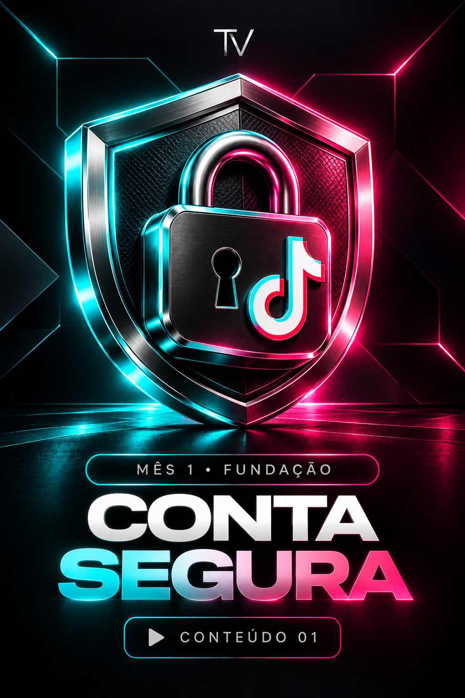
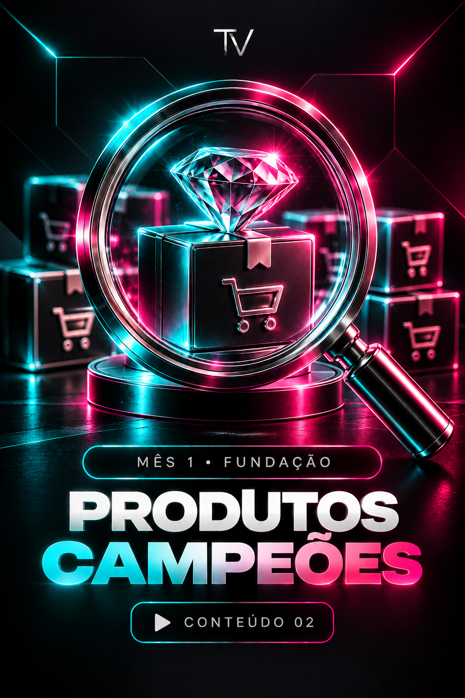
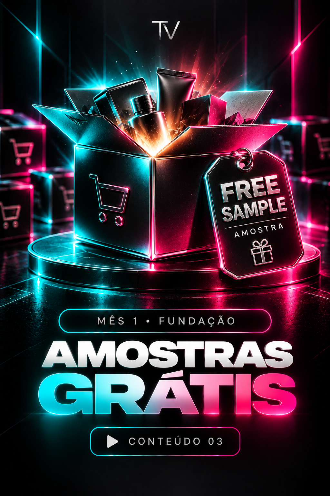
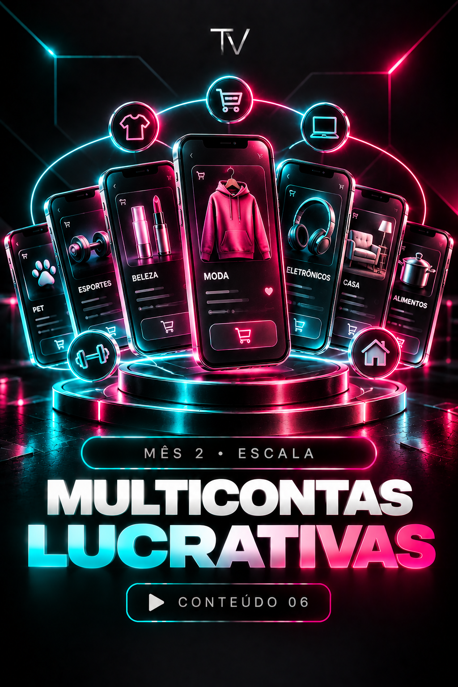
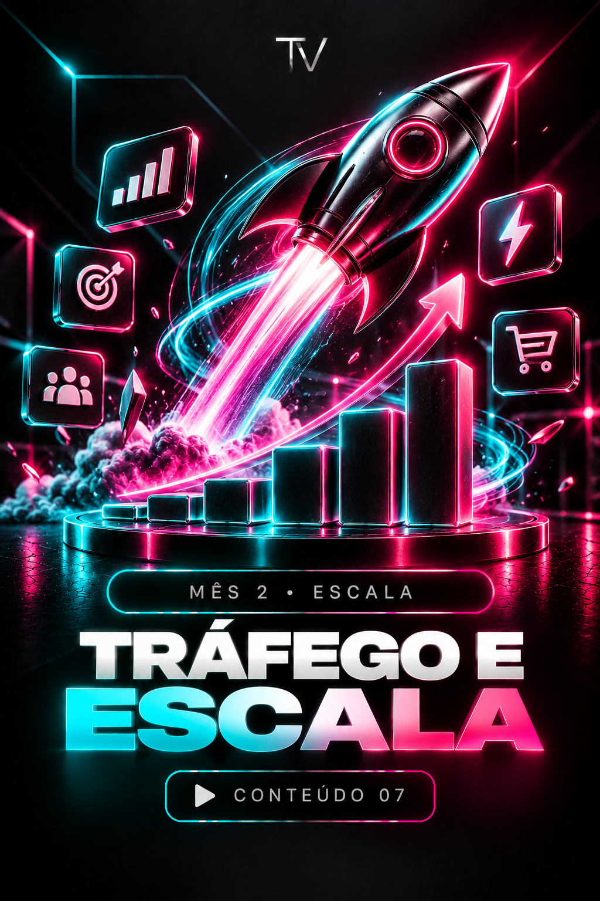
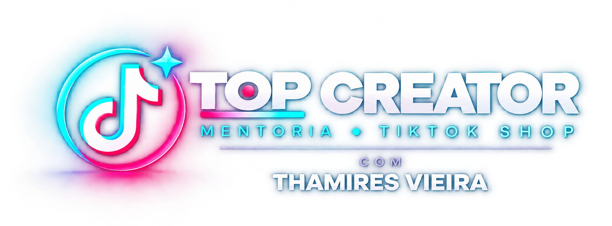

PASSO A PASSO
Como funciona na prática
Vou te ensinar o passo a passo que aplico na plataforma: como garimpar produtos de alta rotação, negociar envio de amostras sem desembolsar nada e estruturar vídeos simples de 60 segundos com taxa anti-flop.
Em dois meses de acompanhamento comigo vou te ajudar a minerar produtos campeões, atrair amostras grátis de marcas e transformar visualizações em enormes comissionamentos pra você.
QUERO GARANTIR UMA DAS 20 VAGAS COM VALOR ESPECIALAcompanhamento ao vivo por 8 semanas • Grupo VIP exclusivo • Garantia incondicional de 7 dias
MENTORIA TOP CREATOR
ThamiresDa minha experiência à sua execução.
R$539.774,82 de GMV atual
GMV é o valor bruto vendido, não a comissão recebida.
01 / O MÉTODO E A TRANSFORMAÇÃO
Quero te mostrar a oportunidade que muita gente ainda não percebe enquanto passa horas rolando a tela do TikTok: uma vitrine com logística própria onde as pessoas entram preparadas para comprar com um clique.
PASSO A PASSO
Vou te ensinar o passo a passo que aplico na plataforma: como garimpar produtos de alta rotação, negociar envio de amostras sem desembolsar nada e estruturar vídeos simples de 60 segundos com taxa anti-flop.
NA SUA MÃO
Vou te ajudar a construir uma operação digital funcional e previsível na sua mão, para transformar sua execução em notificações de comissão aprovada no painel do TikTok Shop.
NOVAS POSSIBILIDADES
Quero te ajudar a construir uma nova fonte de renda com mais autonomia sobre seus horários, liberdade de trabalhar de qualquer lugar e conhecimento para aproveitar essa onda do e-commerce.
02 / PARA QUEM É
Antes de você dar o próximo passo, quero te mostrar para quem preparei esta primeira turma:
✓ PARA QUEM É
× PARA QUEM NÃO É
Toque nos prints para ampliar.
1,2 mil itens vendidos atribuídos no período.
90 itens vendidos com comissão naquele dia.
Nível mais alto alcançado, conforme o painel.
GMV é o valor bruto de mercadorias vendido, não a comissão recebida. Os prints mostram métricas e períodos diferentes e não devem ser somados. Estes são meus resultados individuais, não uma promessa de que você terá os mesmos resultados.
RESULTADO DE ALUNO
“THAMI OLHA ISSOO!
4 mil de comissão hoje”
04 / A MENTORIA POR DENTRO
Eu preparei uma entrega enxuta, aplicável e focada na sua execução. Em vez de te deixar sozinho com dezenas de horas de aulas gravadas, vou te acompanhar na prática:
Vou te acompanhar em grupo pelo Zoom, com direcionamento estratégico e análise de perfis e vídeos dos alunos em tempo real.
MÊS 01
Vou te orientar na configuração de uma conta segura, na mineração de produtos campeões, na solicitação de amostras e na gravação dos primeiros roteiros que convertem.
◎MÊS 02
Vou te apresentar estratégias para transmissões ao vivo (Live Shop), gestão de multicontas para nichos lucrativos e impulsionamento de vídeos validados.
↗CONTEÚDOS, COMUNIDADE E BÔNUS





05 / CONDIÇÃO DA TURMA FUNDADORA
Se você fosse contratar uma consultoria individual com um profissional de topo de mercado para analisar a sua operação por dois meses, pagaria facilmente entre R$2.500 e R$5.000.
Além disso, os bônus que preparei para você somam mais de R$590,00.
Mas eu não quero cobrar esse valor nesta primeira turma. Quero acompanhar de perto os primeiros alunos e construir os primeiros cases de sucesso antes de ampliar a mentoria.
Por isso, preparei uma condição especial para você: não vou cobrar R$2.500, nem mesmo R$1.000.

SEU INVESTIMENTO
ou R$997 à vista
Cartão em até 12x ou Pix à vista
SEU PRÓXIMO PASSO COM TRANQUILIDADE
Faça sua inscrição agora, entre no grupo VIP e assista ao primeiro encontro ao vivo. Se por qualquer motivo você achar que a mentoria não é para você ou que o conteúdo não é prático o suficiente, basta enviar um único e-mail ou mensagem para a minha equipe de suporte dentro dos primeiros 7 dias. Eu devolvo 100% do seu dinheiro, sem ressentimentos e sem fazer perguntas difíceis. Eu assumo esse compromisso com você.
06 / FAQ
Quero te mostrar que você não precisa de uma audiência enorme para que um vídeo encontre novas pessoas. O TikTok recomenda conteúdos considerando o interesse de quem assiste e as interações com cada vídeo — o alcance não fica restrito a quem já segue você. Uma conta antiga, por si só, não garante vendas. Para atuar como afiliado no TikTok Shop, é preciso atender aos requisitos de elegibilidade vigentes da plataforma, incluindo o mínimo de seguidores exigido. Consulte os requisitos oficiais ↗
Eu desenhei este acompanhamento para você que tem uma rotina corrida. Você não precisa passar 8 horas por dia no celular; precisa de 1 hora focada aplicando os templates validados.
Eu vou te ensinar a colocar o produto e o benefício no centro do vídeo. Você pode fazer uma demonstração prática sem precisar mostrar seu rosto.
Eu vou te ensinar a usar o ecossistema da plataforma para solicitar amostras gratuitas aos fornecedores. O envio depende da aprovação de cada marca.
Eu vou disponibilizar todos os encontros gravados na íntegra na área de membros, para você assistir e reassistir quando quiser durante o seu período de acesso.
Vou te dar 1 ano completo de acesso às gravações dos encontros e a todos os templates de roteiros e scripts que eu disponibilizar.
Eu preparei duas formas de pagamento para você: até 12 vezes no cartão de crédito ou à vista via Pix, com liberação imediata da sua vaga.
O SEU PRÓXIMO PASSO
Eu sei como é começar com dúvidas e medo do julgamento. Por isso, quero te convidar a olhar para o que você vai fazer a partir de hoje.
Você pode seguir buscando dicas soltas, escolhendo o que testar e tentando entender seus números por conta própria. Esse caminho continua disponível — e cada decisão sobre o próximo passo fica com você.
Ou você pode passar os próximos dois meses comigo. Eu vou te ensinar meu método, orientar sua escolha de produtos, compartilhar meus roteiros e acompanhar sua execução nos encontros em grupo.
Você entra com disposição para aplicar. Eu entro com direção, experiência e acompanhamento.
Eu não esperei me sentir pronta para começar. E você também não precisa ter todas as respostas para dar o próximo passo.
Se você quer construir sua operação com constância, técnica e dignidade, eu quero te acompanhar nessa jornada.
QUERO ENTRAR NA MENTORIA COM A THAMI8 encontros ao vivo comigo · 2 meses de acompanhamento · Garantia de 7 dias
07 / FALE COM A EQUIPE
Minha equipe de atendimento está aqui para tirar suas dúvidas e te ajudar a decidir antes de preencher as 20 vagas disponíveis.